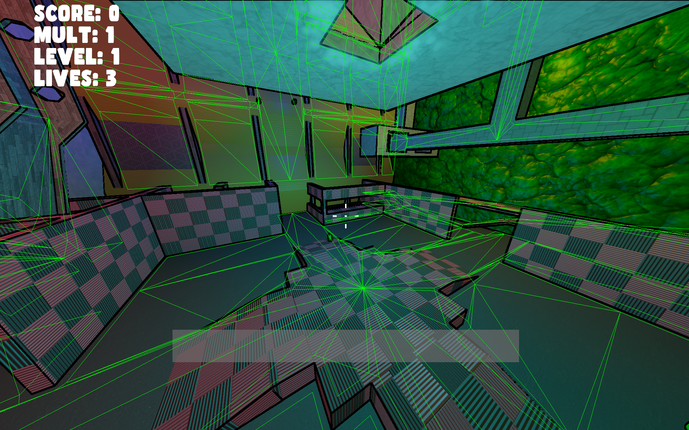
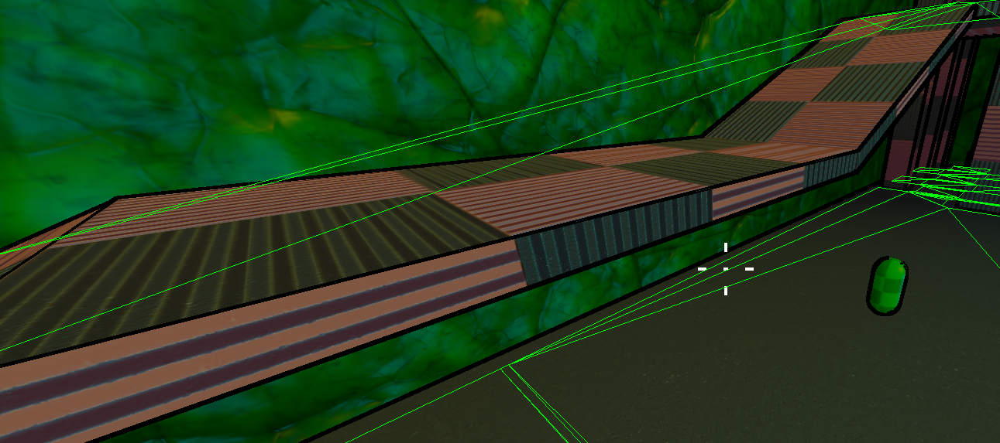
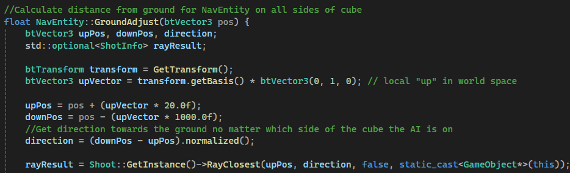
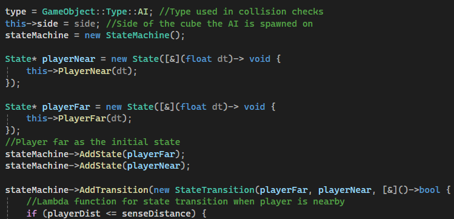
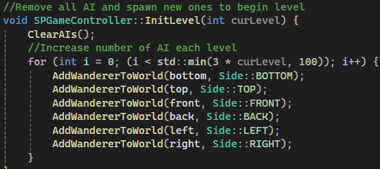

My Contributions
For this project, I was the head of AI and the single player game mode so built the full single player experience for the game.
Below are some code snippets and screenshots from the project.
AI and Pathfinding
The first step was using a script to extract the navmesh data from Unity. Using the NavMesh Component rather than the default Unity
generated NavMesh allowed me to export the cube correctly despite the navigation surface not being on top. I then imported this into
the framework we were using into a NavMesh class.


With the imported NavMeshes for each side of the cube, I used the A* algorithm for my pathfinding. The main issue I encountered
is that, as seen in the screenshot below, Unity's navmesh data smooths over height to create as few triangls as possible
resulting in pathfinding points that are not on the ground. To solve this, I created an adjust function which will figure out
any differences between the height from the path and the ground beneath the AI.


The AI itself had its behaviour defined by a state machine which took into account primarily the distance from the player
and the stats of the AI such as how long it can shoot for before overheating. Below is a code snippet from the creation of the state machine.

Single Player Game Mode
For the game's single player mode, I focused on creating a quick game mode that ramped up in difficulty quickly.
I made a game controller class which handled the overall structure and logic of the mode.
The player earned points by killing enemies quickly and the level would transition after killing a set amount.
Each new level would increase the number of AI spawned and modify their stats to make them stronger.
